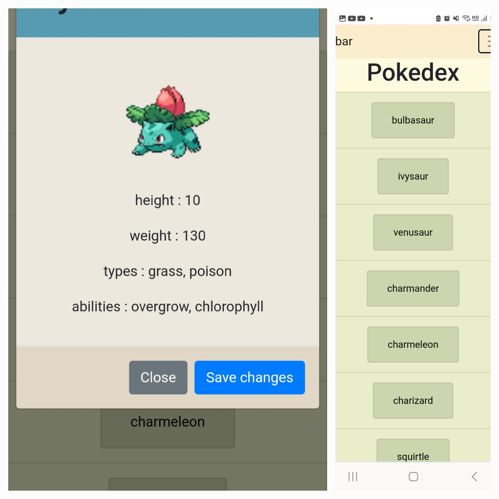

In the Pokedex Web App, users can explore a list of Pokemon and view detailed information about each Pokemon.
This project displays my skills in web development, including HTML, CSS, JavaScript, and the integration of external APIs.
Technologies: HTML, CSS, JavaScript, Bootstrap, Fetch API, Promises
See project on GithubThis API provides information about movies, genres, and directors.
Users can interact with the API to retrieve details about movies, genres, directors, create new users, and manage their favorite movies.
Technologies: Node.js, Express.js, MongoDB with Mongoose, bcrypt, body-parser, cors, express-validator, passport
See project on GithubmyFlix is a web application designed for movie lovers, providing them with an engaging platform to learn about and find movies.
This project is designed to work alongside the myFlix Movie API.
Technologies: React, Parcel
See project on GithubThe application uses the Google Calendar API to fetch upcoming events.
The objective of this project was to build a serverless, progressive web application (PWA) with React using a test-driven development (TDD) technique.
Technologies: React, AWS Lambda, Google Calendar API
See project on GithubThe Chat App will provide users with a chat interface and options to share images and their location.
The objective was to build a chat app for mobile devices using React Native.
Technologies: React Native, Expo, Firebase (Firestore for message database and image storage), React Navigation, Expo packages (async-storage, image-picker, location), Native components for Android
See project on GithubThis project serves as a client for the Movie API, displaying movie data with a user-friendly interface using Angular Material.
The object of this portfolio project is to display my skills in building Angular applications.
Technologies: Angular, Node.js and npm, Angular Material for design, Codebase comments (Typedoc), Hosted on GitHub Pages
See project on Github